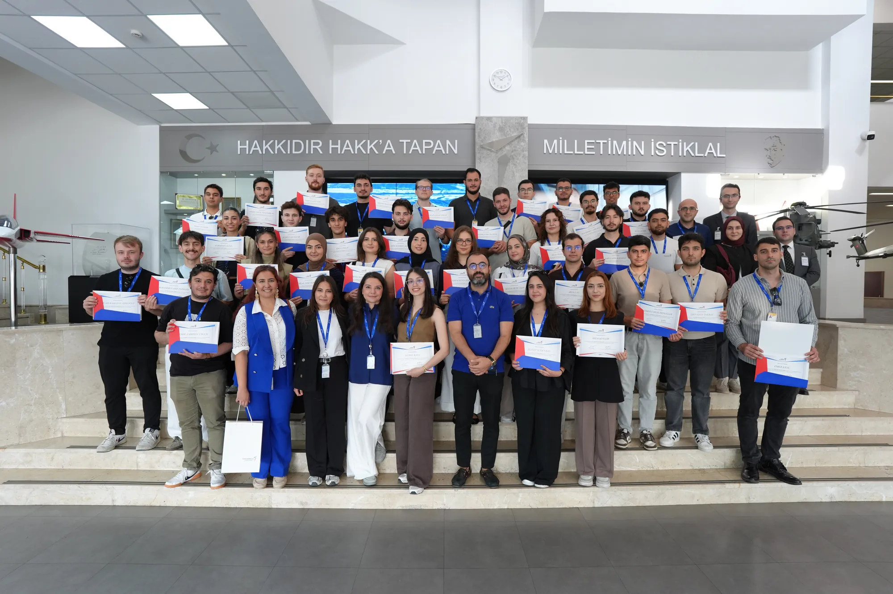
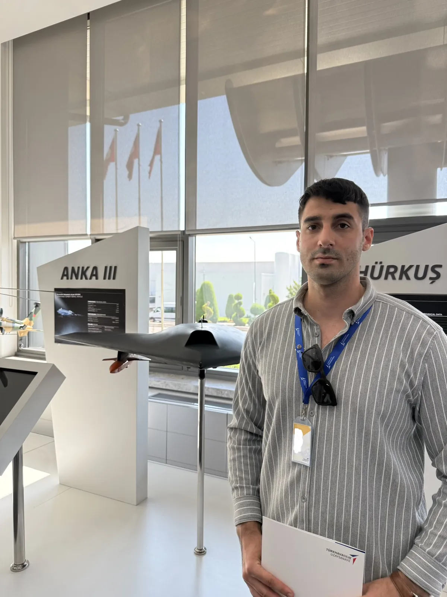
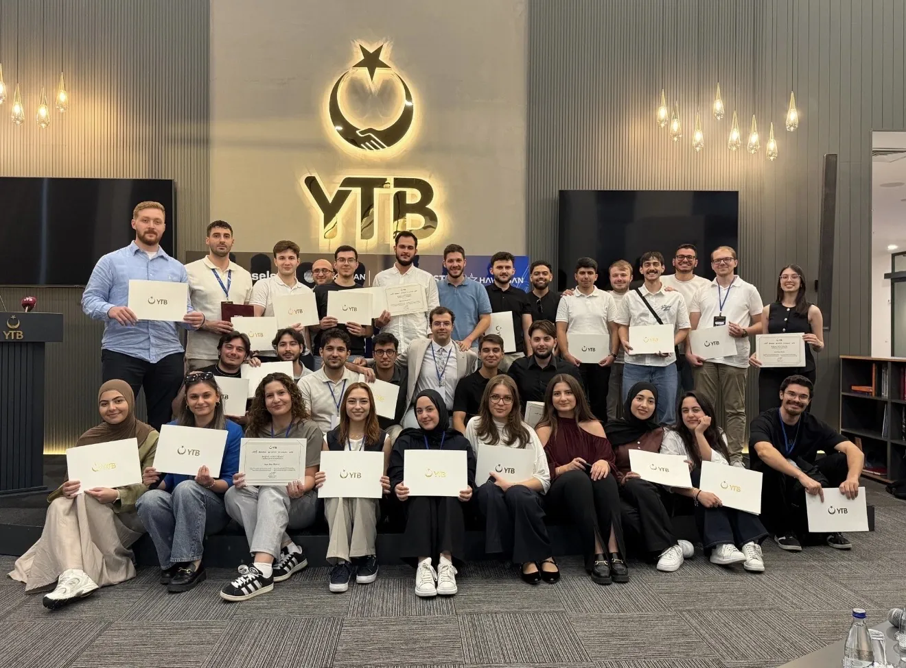

Turkish Aerospace (TUSAŞ)
Candidate engineer · KAAN Aerodynamics and UAV Manufacturing
Ankara · 10 August – 4 September 2026 · SKY Global Türk internship programme,
through the Türkiye Internship Programme of the Presidency for Turks Abroad and Related Communities (YTB)

Four weeks inside the company that builds Turkey’s fifth-generation fighter, split between an aerodynamics department and a manufacturing one. Design data, solver outputs and internal reports from both stay with the company; what follows describes the work, not its results.
KAAN store separation and flight dynamics
I ran store-separation studies end to end: preparing geometry, meshing, running the solver, integrating the six-degree-of-freedom trajectory of the released store, and post-processing the results, and I watched the matching scaled-store wind-tunnel tests across several configurations. Alongside this I worked through the flight dynamics of the aircraft from first principles: the Newton–Euler equations of motion, the stability derivatives and spin behaviour, and how the aerodynamic database and its surrogate models are assembled from CFD and tunnel data.
Rotor-blade manufacturing and balancing
In UAV Manufacturing I wrote a technical report on how T129 ATAK main-rotor blades are built and balanced, to evaluate the same route for AKSUNGUR propeller blades: master tooling, tolerances, centre-of-gravity control, and gram-scale tip trim masses whose moment arm sets the residual vibration. I also traced the design-to-production data chain (composite lay-up, ply data, routing and non-conformance handling) across the AKSUNGUR, ANKA-3, Super Şimşek and AYAZ programmes.

